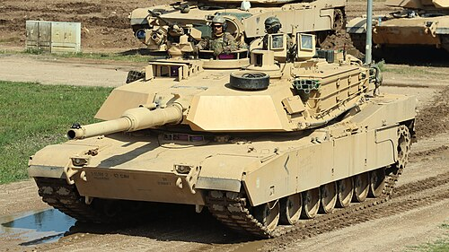

What is a Tank?
A tank is a heavily armored combat vehicle equipped with powerful guns and tracks for mobility. Tanks are designed to provide direct firepower and protection in modern warfare. Their thick armor and high-powered cannon make them extremely effective on the battlefield.

History of Tanks
Tanks were first introduced during World War I to break through enemy trenches. The British developed the first operational tank, the Mark I, in 1916. Since then, tanks have played a vital role in many major conflicts, including World War II, the Gulf War, and modern military operations.
Types of Tanks
- Main Battle Tank (MBT): A versatile and powerful tank used by modern armies.
- Light Tank: A smaller, faster tank used for reconnaissance missions.
- Heavy Tank: An older classification, built for strong defense and large guns.
- Amphibious Tank: Capable of operating in water and land environments.
Interesting Facts
- The word "tank" was originally used to disguise the vehicle's true purpose in WWI.
- Modern tanks can fire accurately while moving at high speed.
- Some tanks can survive hits from anti-tank missiles due to reactive armor.